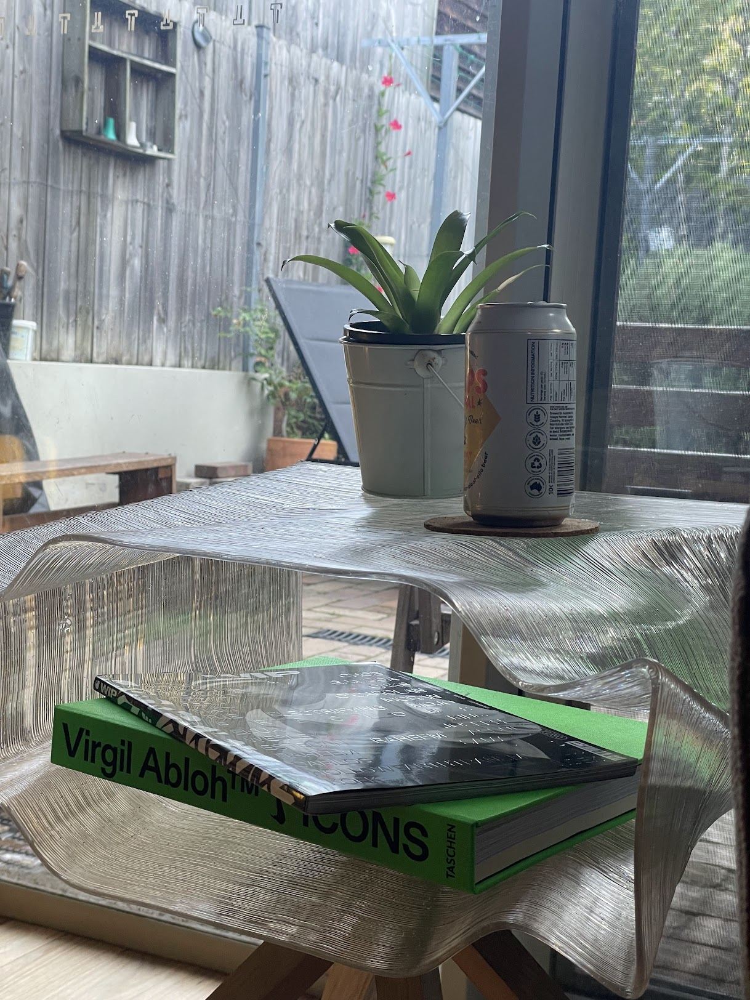
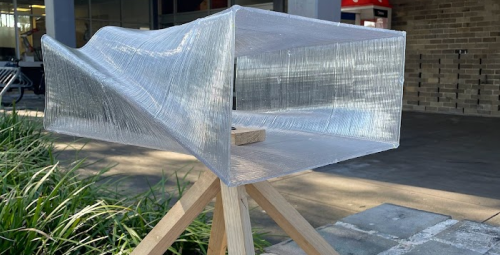
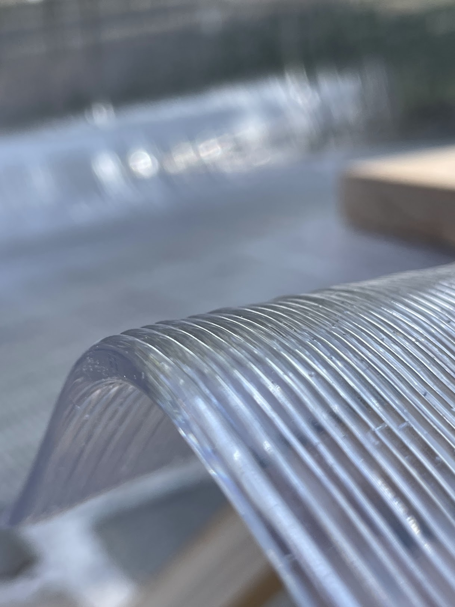
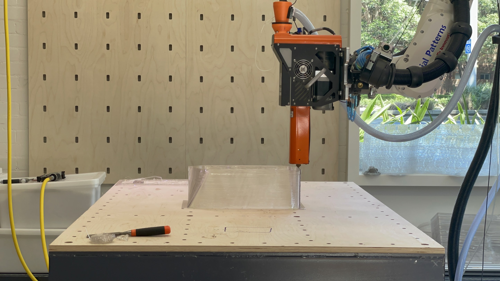

A parametrically designed table created using growth algorithms and large-scale robotic 3D printing.
This project involved parametric design in Grasshopper and growth algorithms using Parakeet to create a unique furniture piece. The primary focus was learning how to implement large-scale 3D printing on the KUKA KR70 robot, generating print instructions and slicing objects using Grasshopper's computational tools.
The table combines advanced digital design with sustainable materials, utilizing recycled PETG plastic as the primary printing medium. This approach allowed for material optimization while exploring the aesthetic possibilities of algorithmic design in functional furniture.
The design process began with parametric explorations in Grasshopper, focusing on implementing growth algorithms through Parakeet. These algorithms allowed me to generate organic, efficient structures that optimized material usage while maintaining the necessary structural integrity for a functional table.
After finalizing the design, I developed custom slicing procedures in Grasshopper to generate the robotic print paths. This step was crucial for translating the complex parametric geometry into executable instructions for the KUKA KR70 robot.
One of the major challenges in this project was optimizing the print process to avoid warping and material adhesion issues. Since the printing took place in an unregulated, open-air environment, environmental conditions significantly affected the printing quality. Through systematic trial and error, I documented various environmental factors and their effects on the print, allowing me to develop strategies to maintain consistent quality.
The printing utilized recycled PETG with a Massive Dimension extruder mounted on the KUKA KR70 robot. This setup required careful calibration and monitoring throughout the printing process to ensure proper layer adhesion and structural integrity.
The post-production process involved manual manipulation of the printed elements with hand tools to fit the timber legs properly. This highlighted a limitation in the current workflow - the lack of standardized methods for attaching non-printed components to 3D printed structures.
This insight has informed my approach to future projects, where I plan to incorporate attachment points for non-printed components directly into the parametric design, eliminating the need for extensive post-processing.



The completed table successfully demonstrates the integration of parametric design with robotic fabrication techniques. The project provided valuable insights into the challenges of large-scale 3D printing with recycled materials, particularly in environments with variable conditions.
Future projects will incorporate methods to attach non-printed components as standard features within the parametric design, removing the requirement for post-processing. I also plan to develop more robust printing strategies for unregulated environments, potentially through adaptive print parameters that respond to environmental conditions in real-time.